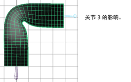
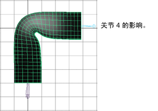
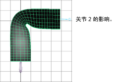
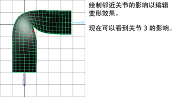

注：
对于“绘制蒙皮权重工具”(Paint Skin Weights Tool)，“反射”(Reflection)处于禁用状态。“蒙皮 > 镜像蒙皮权重”(Skin > Mirror Skin Weights)可以用作执行蒙皮权重的反射的一种替代方法。
绘制折痕效果
- 选择平滑着色处理显示模式（热键：按 5 键）。
- 选择圆柱体。
- 选择“蒙皮 > 绘制蒙皮权重”(Skin > Paint Skin Weights) >
 以打开绘制蒙皮权重工具。
以打开绘制蒙皮权重工具。 - 在“工具设置”(Tool Settings)窗口中，这时应显示“影响”(Influence)区域。详细信息请参见“蒙皮 > 绘制蒙皮权重”(Skin > Paint Skin Weights)。
- 请注意“变换”(Transform)框。
- 单击一个关节名称。例如，单击 joint3。 
- 在“影响”(Influence)框中，单击另一关节名称。例如，单击 joint4。 
- 检查一个或多个关节的影响。例如，检查 joint2 的影响。 
- 使用“绘制蒙皮权重工具”(Paint Skin Weights Tool)绘制关节影响折痕的方法。 